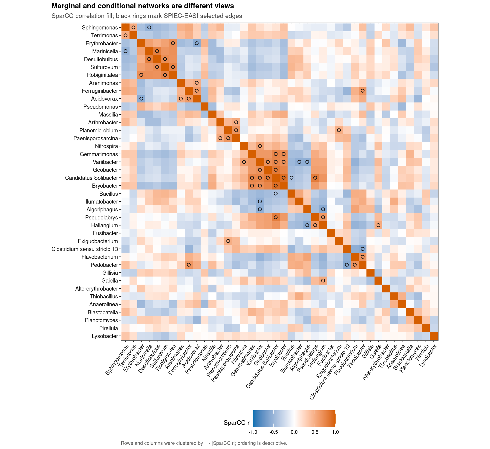
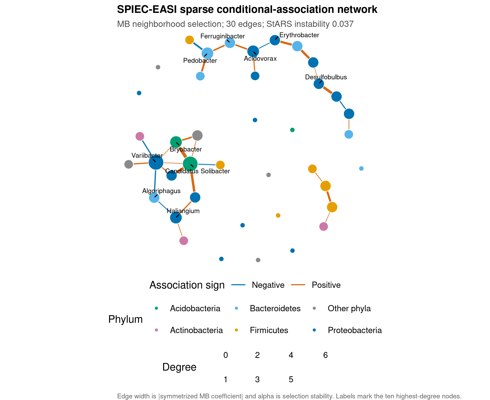
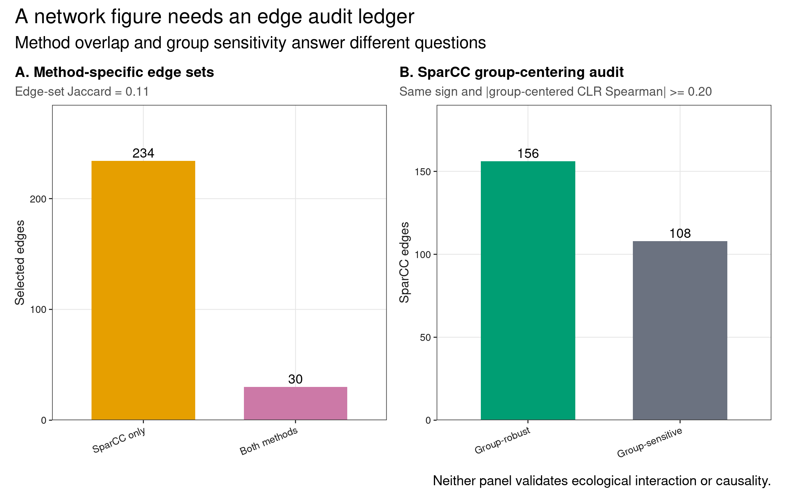

options(timeout = 600)
data_url <- "https://raw.githubusercontent.com/petemeng/microbiome-best-practices/3cb6a817e0c73ab7ecbec1cedc1ad80cbb9ecfaa/"
input_files <- c(
"data/small/metadata.tsv",
"data/small/otutab.tsv",
"data/small/taxonomy.tsv"
)
for (path in input_files) {
dir.create(dirname(path), recursive = TRUE, showWarnings = FALSE)
if (!file.exists(path)) download.file(paste0(data_url, path), path, mode = "wb", quiet = TRUE)
}共现网络基础：SparCC/SPIEC-EASI/ggClusterNet
共现网络不是微生物互作网络
Friedman & Alm (2012)提出 SparCC，用 composition-aware correlation 重建 microbial association network；Kurtz et al. (2015)提出 SPIEC-EASI，以 sparse inverse-covariance/neighborhood selection 估计条件关联。下面用真实湿地 16S 三件套比较 correlation matrix、SPIEC-EASI network 和 edge audit ledger。
重要先给结论
Network edge 最多表示在当前样本、feature filter、composition reference 与模型下的统计关联；它不是共培养、代谢交换、竞争或因果作用。SparCC 给 marginal association，SPIEC-EASI 尝试在其他节点条件下保留 sparse association，因此两者的边集不应完全一致。优先解释经过稳定性、group adjustment、方法对照和外部数据支持的边；节点 degree 高也不能直接叫 keystone taxon。
本页使用 microeco 2.0.0 的真实湿地数据，纳入 CW、IW、TW 各 30 个样本。网络只包含具有可报告 genus label 的 40 个 group-blind 高信息属，不把 unclassified residual 当节点。由于 pooled groups 本身可能制造相关，所有 SparCC edges 额外与 group-centered CLR correlation 对照。
下载并读取本次分析的数据
需要 R，以及 SpiecEasi、ggplot2、ggrepel、igraph、knitr、patchwork、ragg、svglite。本次使用中国湿地的 OTU count 表、分类表和样本信息表。
在一个新建的文件夹中运行以下代码，下载文件后按文中的顺序继续分析：
library(ggplot2)
library(SpiecEasi)
set.seed(20260735)
font_pub <- "sans"
pal_pub <- c(
blue = "#0072B2", orange = "#E69F00", green = "#009E73",
vermillion = "#D55E00", purple = "#CC79A7", sky = "#56B4E9",
yellow = "#F0E442", grey = "#6B7280"
)
scale_color_pub <- function(..., values = unname(pal_pub)) {
ggplot2::scale_color_manual(..., values = values)
}
scale_fill_pub <- function(..., values = unname(pal_pub)) {
ggplot2::scale_fill_manual(..., values = values)
}
theme_pub <- function(base_size = 10, base_family = font_pub) {
ggplot2::theme_bw(base_size = base_size, base_family = base_family) +
ggplot2::theme(
panel.grid.minor = ggplot2::element_blank(),
panel.grid.major = ggplot2::element_line(
colour = "#E6E6E6", linewidth = 0.25
),
axis.text = ggplot2::element_text(colour = "#1A1A1A"),
axis.title = ggplot2::element_text(colour = "#1A1A1A"),
axis.ticks = ggplot2::element_line(colour = "#1A1A1A", linewidth = 0.3),
plot.title.position = "plot",
plot.title = ggplot2::element_text(
face = "bold", size = ggplot2::rel(1.15)
),
plot.subtitle = ggplot2::element_text(colour = "#4D4D4D"),
plot.caption = ggplot2::element_text(colour = "#666666", hjust = 0),
strip.background = ggplot2::element_rect(
fill = "#F2F2F2", colour = "#B3B3B3", linewidth = 0.3
),
strip.text = ggplot2::element_text(face = "bold"),
legend.key = ggplot2::element_blank(), legend.position = "top"
)
}
save_pub <- function(
plot, file_base, width = 89, height = 70, units = "mm",
dpi = 600, write_svg = TRUE, write_tiff = TRUE,
base_family = font_pub
) {
dir.create(dirname(file_base), recursive = TRUE, showWarnings = FALSE)
ggplot2::ggsave(
paste0(file_base, ".pdf"), plot, width = width, height = height,
units = units, device = grDevices::cairo_pdf,
family = base_family, bg = "white"
)
if (write_svg) ggplot2::ggsave(
paste0(file_base, ".svg"), plot, width = width, height = height,
units = units, device = svglite::svglite, bg = "white"
)
ggplot2::ggsave(
paste0(file_base, ".png"), plot, width = width, height = height,
units = units, dpi = dpi, device = ragg::agg_png, bg = "white"
)
if (write_tiff) ggplot2::ggsave(
paste0(file_base, ".tiff"), plot, width = width, height = height,
units = units, dpi = dpi, device = ragg::agg_tiff,
compression = "lzw", bg = "white"
)
invisible(plot)
}从三件套生成 90 × 40 的命名属矩阵
read_keyed_tsv <- function(path) {
x <- readr::read_tsv(
path, show_col_types = FALSE, progress = FALSE,
name_repair = "minimal", na = character()
)
ids <- as.character(x[[1L]])
stopifnot(!anyDuplicated(ids))
out <- as.data.frame(x[-1L], check.names = FALSE)
rownames(out) <- ids
out
}
otutab_raw <- read_keyed_tsv("data/small/otutab.tsv")
taxonomy <- read_keyed_tsv("data/small/taxonomy.tsv")
metadata <- read_keyed_tsv("data/small/metadata.tsv")
otutab <- as.matrix(data.frame(
lapply(otutab_raw, as.integer), check.names = FALSE
))
rownames(otutab) <- rownames(otutab_raw)
metadata$Group <- factor(metadata$Group, levels = c("CW", "IW", "TW"))
rank_names <- c(
"Kingdom", "Phylum", "Class", "Order", "Family", "Genus", "Species"
)
clean_taxon <- function(x) {
x <- sub("^[A-Za-z]__", "", trimws(as.character(x)))
x[
is.na(x) | x == "" |
grepl(
"unclassified|unknown|unassigned|uncultured|metagenome",
x, ignore.case = TRUE
)
] <- NA_character_
x
}
taxonomy_clean <- as.data.frame(
lapply(taxonomy[rownames(otutab), rank_names], clean_taxon),
check.names = FALSE
)
known_genus <- !is.na(taxonomy_clean$Genus)
lineage_key <- apply(
taxonomy_clean[known_genus, rank_names[1:6], drop = FALSE], 1L,
function(x) paste(ifelse(is.na(x), "?", x), collapse = ";")
)
genus_counts <- rowsum(
otutab[known_genus, , drop = FALSE], lineage_key, reorder = FALSE
)
lineages <- rownames(genus_counts)
lineage_matrix <- do.call(rbind, strsplit(lineages, ";", fixed = TRUE))
colnames(lineage_matrix) <- rank_names[1:6]
labels <- lineage_matrix[, "Genus"]
feature_ids <- make.unique(paste0("Genus:", labels))
rownames(genus_counts) <- feature_ids
feature_info_all <- data.frame(
FeatureID = feature_ids,
as.data.frame(lineage_matrix, stringsAsFactors = FALSE),
DisplayTaxon = labels,
Lineage = lineages,
stringsAsFactors = FALSE,
row.names = feature_ids,
check.names = FALSE
)
prevalence <- rowMeans(genus_counts > 0)
total_reads <- rowSums(genus_counts)
eligible <- prevalence >= 0.20 & total_reads >= 100
selection_score <- prevalence * log1p(total_reads)
selected_ids <- names(sort(selection_score[eligible], decreasing = TRUE))[1:40]
counts <- genus_counts[selected_ids, , drop = FALSE]
feature_info <- feature_info_all[selected_ids, , drop = FALSE]
sample_by_taxon <- t(counts)
stopifnot(
nrow(otutab) == 13628L,
ncol(otutab) == 90L,
sum(otutab) == 1619670L,
nrow(sample_by_taxon) == 90L,
ncol(sample_by_taxon) == 40L,
all(rowMeans(counts > 0) >= 0.20),
all(rowSums(counts) >= 100L),
!any(grepl("Unclassified", rownames(counts), ignore.case = TRUE))
)
data.frame(
Samples = nrow(sample_by_taxon),
Genera = ncol(sample_by_taxon),
CW = sum(metadata$Group == "CW"),
IW = sum(metadata$Group == "IW"),
TW = sum(metadata$Group == "TW"),
RetainedNamedReadFraction = sum(counts) / sum(otutab)
) Samples Genera CW IW TW RetainedNamedReadFraction
1 90 40 30 30 30 0.1987849下载完整 R 脚本。脚本包含数据下载、计算和图形导出。
首次使用时安装 R 包
install.packages(c(
"boot", "ggplot2", "ggrepel", "igraph", "patchwork", "pulsar",
"ragg", "readr", "remotes", "scales", "svglite", "systemfonts"
))
# R 4.4 / Bioconductor 3.19 兼容的官方 SPIEC-EASI 快照：
remotes::install_github(
"zdk123/SpiecEasi@c463727",
upgrade = "never"
)
# ggClusterNet 是可选布局/工作流层；安装后记录实际 commit SHA：
remotes::install_github(
"taowenmicro/ggClusterNet",
upgrade = "never"
)相关、条件关联和生态作用是三层证据
固定总和约束会扭曲普通相关性
对 composition \(x_i\)，所有份额加和为 1。一个 taxon 的份额增加会迫使其他份额下降，因此普通 Pearson/Spearman 可产生结构性负相关。SparCC 假定底层 log absolute abundances 的 correlation network 较稀疏，从 log-ratio variance 近似恢复 correlation。
SparCC 的连边表示边际关联
SparCC 的 \(r_{ij}\)概括 taxon \(i\) 与 \(j\) 的成对 association；第三个 taxon、环境梯度或 group separation 都可能同时驱动二者。本页用 permutation 得经验 p-value、BH q-value，再要求 |r|>=0.30。Permutation 数决定 p-value 分辨率，200 次只能得到约 1/201 的最小加一校正 p-value，适合教程与筛查，不是大规模最终确认的终点。
SPIEC-EASI 的连边表示稀疏条件关联
SPIEC-EASI 先做 composition-aware transformation，再估计 sparse graphical model。Meinshausen–Bühlmann（MB）neighborhood selection 中，若在其余 taxa 条件下 \(i\) 与 \(j\) 的 regression coefficient 被保留，就形成 edge。StARS 用 subsampling 选择 sparsity，使平均 instability 不超过目标范围；本页记录 selected instability、edge stability 和完整参数。
合并不同分组可能产生辛普森悖论
若某两个 genus 都在 CW 高、在 IW 低，即使组内互不关联，合并后也可能显著正相关。本页对 selected count table 做 log2(count+0.5) CLR，再在每个 group 内减去 taxon 均值；SparCC edge 只有在 group-centered CLR 中仍保持同方向且 |r|>=0.20，才标记为 group-robust sensitivity。这个诊断不能替代正式的 covariate-aware network model，但能暴露明显 group-driven edges。
ggClusterNet 是工作流与布局层，不是独立真值层
ggClusterNet可计算 correlation、网络指标并提供多种布局。布局只改变节点坐标，threshold 只改变显示边；二者都不增加 edge validity。本文主路径先由 SparCC/SPIEC-EASI生成可审计 edge table，再用 igraph 固定 seed 布局。若换 ggClusterNet，应把同一 edge/node ledger 传入或核对其内部参数，而不是让“一键出图”隐藏 inference contract。
深入：为什么没有 gold-standard network 时不能按图形相似度选方法
自然群落通常没有完整、方向明确的已验证交互网。边数多、模块漂亮或 scale-free 拟合高都不证明准确；不同 sampling depth、prevalence filter 和 node count 本身会改变这些拓扑量。方法选择应基于 estimand、composition handling、sparsity assumption、stability、simulation/positive controls 与外部验证，而不是挑最像期刊配图的一张。
比较边际相关与条件关联网络
SparCC + 200 次 bootstrap/permutation
sparcc_replicates <- 200L
set.seed(20260735)
sparcc_boot <- SpiecEasi::sparccboot(
sample_by_taxon,
R = sparcc_replicates,
ncpus = 1
)
sparcc_inference <- SpiecEasi::pval.sparccboot(
sparcc_boot, sided = "both"
)
# `pval.sparccboot()` returns the reference coefficients in `cors`.
# Reusing them keeps the effect estimates and empirical p-values tied to the
# same fitted object; a second `sparcc()` call can follow a different internal
# initialization path and should not be mixed with this bootstrap result.
sparcc_correlation <- matrix(
0,
nrow = length(selected_ids),
ncol = length(selected_ids),
dimnames = list(selected_ids, selected_ids)
)
sparcc_correlation[upper.tri(sparcc_correlation)] <- sparcc_inference$cors
sparcc_correlation <- sparcc_correlation + t(sparcc_correlation)
diag(sparcc_correlation) <- 1
upper_index <- which(upper.tri(sparcc_correlation), arr.ind = TRUE)
# Add-one correction prevents zero empirical p-values.
sparcc_unstable <- !is.finite(sparcc_inference$pvals)
sparcc_raw_p <- sparcc_inference$pvals
sparcc_raw_p[sparcc_unstable] <- 1
sparcc_p <- (
sparcc_raw_p * sparcc_replicates + 1
) / (sparcc_replicates + 1)
sparcc_q <- stats::p.adjust(sparcc_p, method = "BH")
sparcc_all_pairs <- data.frame(
From = rownames(sparcc_correlation)[upper_index[, "row"]],
To = colnames(sparcc_correlation)[upper_index[, "col"]],
Association = sparcc_inference$cors,
EmpiricalP = sparcc_p,
QValue = sparcc_q,
BootstrapStable = !sparcc_unstable,
stringsAsFactors = FALSE
)
sparcc_all_pairs$Selected <- with(
sparcc_all_pairs,
BootstrapStable & abs(Association) >= 0.30 & QValue < 0.05
)
sparcc_edges <- sparcc_all_pairs[sparcc_all_pairs$Selected, ]
sparcc_edges$Method <- "SparCC"
stopifnot(
nrow(sparcc_all_pairs) == choose(40L, 2L),
all(is.finite(sparcc_all_pairs$Association)),
all(sparcc_all_pairs$EmpiricalP >= 1 / 201),
all(sparcc_all_pairs$QValue >= 0 & sparcc_all_pairs$QValue <= 1),
nrow(sparcc_edges) >= 10L
)200 次 permutation 的 p-value 分辨率较粗；最终投稿应把 replicate 数提高到至少 1,000，并检查 200/500/1,000 的 edge set 是否稳定。这里把 |r|>=0.30和 BH 同时作为筛查门槛，不把零 p-value 或单一 correlation threshold 当作验证。
SPIEC-EASI MB + StARS
set.seed(20260735)
spiec_fit <- SpiecEasi::spiec.easi(
sample_by_taxon,
method = "mb",
lambda.min.ratio = 1e-2,
nlambda = 20,
pulsar.params = list(
rep.num = 50,
seed = 20260735L
),
verbose = FALSE
)
spiec_adjacency <- as.matrix(SpiecEasi::getRefit(spiec_fit))
spiec_beta <- as.matrix(SpiecEasi::symBeta(
SpiecEasi::getOptBeta(spiec_fit), mode = "maxabs"
))
spiec_edge_stability <- as.matrix(SpiecEasi::getOptMerge(spiec_fit))
dimnames(spiec_adjacency) <- list(selected_ids, selected_ids)
dimnames(spiec_beta) <- list(selected_ids, selected_ids)
dimnames(spiec_edge_stability) <- list(selected_ids, selected_ids)
spiec_index <- which(
upper.tri(spiec_adjacency) & spiec_adjacency != 0,
arr.ind = TRUE
)
spiec_edges <- data.frame(
From = rownames(spiec_adjacency)[spiec_index[, "row"]],
To = colnames(spiec_adjacency)[spiec_index[, "col"]],
Association = spiec_beta[spiec_index],
EdgeStability = spiec_edge_stability[spiec_index],
Method = "SPIEC-EASI",
stringsAsFactors = FALSE
)
spiec_instability <- as.numeric(SpiecEasi::getStability(spiec_fit))
spiec_lambda <- as.numeric(SpiecEasi::getOptLambda(spiec_fit))
stopifnot(
nrow(spiec_adjacency) == 40L,
nrow(spiec_edges) >= 5L,
spiec_instability <= 0.05,
all(spiec_edges$EdgeStability >= 0 & spiec_edges$EdgeStability <= 1),
all(is.finite(spiec_edges$Association))
)按相同节点对比较两种方法的连边
edge_key <- function(from, to) {
paste(pmin(from, to), pmax(from, to), sep = " || ")
}
sparcc_edges$EdgeKey <- edge_key(sparcc_edges$From, sparcc_edges$To)
spiec_edges$EdgeKey <- edge_key(spiec_edges$From, spiec_edges$To)
all_edge_keys <- union(sparcc_edges$EdgeKey, spiec_edges$EdgeKey)
edge_overlap <- data.frame(
EdgeKey = all_edge_keys,
InSparCC = all_edge_keys %in% sparcc_edges$EdgeKey,
InSPIECEASI = all_edge_keys %in% spiec_edges$EdgeKey,
stringsAsFactors = FALSE
)
edge_overlap$Category <- with(
edge_overlap,
ifelse(
InSparCC & InSPIECEASI, "Both methods",
ifelse(InSparCC, "SparCC only", "SPIEC-EASI only")
)
)
network_jaccard <- sum(edge_overlap$InSparCC & edge_overlap$InSPIECEASI) /
nrow(edge_overlap)
common_keys <- intersect(sparcc_edges$EdgeKey, spiec_edges$EdgeKey)
common_edges <- data.frame(
EdgeKey = common_keys,
SparCC = sparcc_edges$Association[match(common_keys, sparcc_edges$EdgeKey)],
SPIECEASI = spiec_edges$Association[match(common_keys, spiec_edges$EdgeKey)],
stringsAsFactors = FALSE
)
common_edges$SignAgreement <- sign(common_edges$SparCC) ==
sign(common_edges$SPIECEASI)
network_method_summary <- data.frame(
Metric = c(
"SparCC selected edges", "SPIEC-EASI selected edges",
"Shared edges", "Edge-set Jaccard", "Shared-edge sign agreement",
"SPIEC-EASI StARS instability", "SPIEC-EASI selected lambda"
),
Value = c(
nrow(sparcc_edges), nrow(spiec_edges), length(common_keys),
network_jaccard,
if (nrow(common_edges)) mean(common_edges$SignAgreement) else NA_real_,
spiec_instability, spiec_lambda
),
stringsAsFactors = FALSE
)
network_method_summary Metric Value
1 SparCC selected edges 264.00000000
2 SPIEC-EASI selected edges 30.00000000
3 Shared edges 30.00000000
4 Edge-set Jaccard 0.11363636
5 Shared-edge sign agreement 1.00000000
6 SPIEC-EASI StARS instability 0.03718974
7 SPIEC-EASI selected lambda 0.54952898审计 pooled-group edge
log_counts <- log2(sample_by_taxon + 0.5)
clr_values <- log_counts - rowMeans(log_counts)
group_centered_clr <- clr_values
for (group_name in levels(metadata$Group)) {
rows <- metadata$Group == group_name
group_centered_clr[rows, ] <- sweep(
clr_values[rows, , drop = FALSE],
2L,
colMeans(clr_values[rows, , drop = FALSE]),
"-"
)
}
group_centered_correlation <- stats::cor(
group_centered_clr, method = "spearman"
)
sparcc_edges$GroupCenteredCLR <- mapply(
function(from, to) group_centered_correlation[from, to],
sparcc_edges$From, sparcc_edges$To
)
sparcc_edges$GroupRobust <- with(
sparcc_edges,
sign(Association) == sign(GroupCenteredCLR) & abs(GroupCenteredCLR) >= 0.20
)
group_audit_summary <- data.frame(
SparCCEdges = nrow(sparcc_edges),
SameDirectionAfterGroupCentering = sum(
sign(sparcc_edges$Association) == sign(sparcc_edges$GroupCenteredCLR)
),
GroupRobustEdges = sum(sparcc_edges$GroupRobust),
GroupRobustFraction = mean(sparcc_edges$GroupRobust),
stringsAsFactors = FALSE
)
group_audit_summary SparCCEdges SameDirectionAfterGroupCentering GroupRobustEdges
1 264 244 156
GroupRobustFraction
1 0.5909091Group-centering 使用的是显式 0.5 replacement 的 CLR Spearman sensitivity，不是另一个正式网络。若结论依赖 treatment-specific network，应增加每组样本量、用适配的 differential/covariate-aware network 模型，并比较 edge selection uncertainty；30 个样本/组不足以支持大规模组间网络差异宣称。
保存固定布局下的节点表与连边表
network_graph <- igraph::graph_from_data_frame(
spiec_edges[, c("From", "To")],
directed = FALSE,
vertices = data.frame(
name = selected_ids,
DisplayTaxon = feature_info[selected_ids, "DisplayTaxon"],
Phylum = feature_info[selected_ids, "Phylum"],
stringsAsFactors = FALSE
)
)
set.seed(20260735)
network_layout <- igraph::layout_with_fr(
network_graph, niter = 1000, grid = "nogrid"
)
node_plot_data <- data.frame(
FeatureID = igraph::V(network_graph)$name,
X = network_layout[, 1L],
Y = network_layout[, 2L],
DisplayTaxon = igraph::vertex_attr(network_graph, "DisplayTaxon"),
Phylum = igraph::vertex_attr(network_graph, "Phylum"),
Degree = igraph::degree(network_graph),
stringsAsFactors = FALSE
)
top_phyla <- names(head(sort(table(node_plot_data$Phylum), decreasing = TRUE), 5L))
node_plot_data$PhylumDisplay <- ifelse(
node_plot_data$Phylum %in% top_phyla,
node_plot_data$Phylum, "Other phyla"
)
label_nodes <- head(
node_plot_data[order(-node_plot_data$Degree, node_plot_data$DisplayTaxon), ],
10L
)
edge_plot_data <- spiec_edges
edge_plot_data$X <- node_plot_data$X[match(edge_plot_data$From, node_plot_data$FeatureID)]
edge_plot_data$Y <- node_plot_data$Y[match(edge_plot_data$From, node_plot_data$FeatureID)]
edge_plot_data$XEnd <- node_plot_data$X[match(edge_plot_data$To, node_plot_data$FeatureID)]
edge_plot_data$YEnd <- node_plot_data$Y[match(edge_plot_data$To, node_plot_data$FeatureID)]
edge_plot_data$Direction <- ifelse(
edge_plot_data$Association >= 0, "Positive", "Negative"
)
stopifnot(
all(is.finite(node_plot_data$X)),
all(is.finite(edge_plot_data$X)),
sum(node_plot_data$Degree) == 2L * nrow(spiec_edges)
)怎样判断一条网络边是否稳定？
network_audit <- data.frame(
Dimension = c(
"Composition", "Feature filter", "Uncertainty", "Covariates",
"Method", "Topology", "Biological claim"
),
FragilePractice = c(
"Pearson on percentages",
"Choose nodes after seeing edges",
"Threshold r without resampling",
"Pool groups without audit",
"Treat every method as interchangeable",
"Call high degree a keystone",
"Call an edge an interaction"
),
UpgradedContract = c(
"Use composition-aware inference",
"Group-blind prevalence/abundance contract",
"Permutation/bootstrapping and StARS ledger",
"Group-centered sensitivity or covariate model",
"Compare marginal and conditional estimands",
"Report degree with selection uncertainty",
"Validate with perturbation, culture or mechanism"
),
stringsAsFactors = FALSE
)
knitr::kable(network_audit, caption = "Microbial association-network audit")| Dimension | FragilePractice | UpgradedContract |
|---|---|---|
| Composition | Pearson on percentages | Use composition-aware inference |
| Feature filter | Choose nodes after seeing edges | Group-blind prevalence/abundance contract |
| Uncertainty | Threshold r without resampling | Permutation/bootstrapping and StARS ledger |
| Covariates | Pool groups without audit | Group-centered sensitivity or covariate model |
| Method | Treat every method as interchangeable | Compare marginal and conditional estimands |
| Topology | Call high degree a keystone | Report degree with selection uncertainty |
| Biological claim | Call an edge an interaction | Validate with perturbation, culture or mechanism |
SparCC 与 SPIEC-EASI disagreement 不是软件错误：marginal correlation 可经第三个节点间接产生，conditional model 又受 sparse assumption 与 penalty 影响。报告 shared edges、method-specific edges、sign agreement、StARS instability、edge stability 和 group sensitivity，比只给一个网络截图更接近可复核证据。
ggClusterNet 的强项是网络工作流、模块化布局与拓扑汇总；升级用法是先冻结 edge table，再让布局函数读取，不让内部 correlation/threshold 默默重算。每次导出 node coordinates、node table、edge table 和 package commit，确保图能在 Cytoscape、Gephi、igraph 或 ggClusterNet 间重建。
区分稳定关联与分组混杂产生的边
图 1：在 SparCC 相关矩阵上标注 SPIEC-EASI 连边
taxon_order <- hclust(as.dist(1 - abs(sparcc_correlation)))$order
ordered_ids <- selected_ids[taxon_order]
matrix_plot_data <- as.data.frame(as.table(sparcc_correlation))
names(matrix_plot_data) <- c("From", "To", "Correlation")
matrix_plot_data$From <- factor(matrix_plot_data$From, levels = rev(ordered_ids))
matrix_plot_data$To <- factor(matrix_plot_data$To, levels = ordered_ids)
matrix_plot_data$SPIECEdge <- edge_key(
as.character(matrix_plot_data$From), as.character(matrix_plot_data$To)
) %in% spiec_edges$EdgeKey &
as.character(matrix_plot_data$From) != as.character(matrix_plot_data$To)
display_labels <- setNames(feature_info$DisplayTaxon, rownames(feature_info))
network_matrix_plot <- ggplot(
matrix_plot_data,
aes(x = To, y = From, fill = Correlation)
) +
geom_tile() +
geom_point(
data = matrix_plot_data[matrix_plot_data$SPIECEdge, ],
shape = 21, fill = NA, colour = "#111111", stroke = 0.45, size = 1.25,
inherit.aes = FALSE,
aes(x = To, y = From)
) +
scale_fill_gradient2(
low = pal_pub[["blue"]], mid = "white", high = pal_pub[["vermillion"]],
midpoint = 0, limits = c(-1, 1)
) +
scale_x_discrete(labels = display_labels) +
scale_y_discrete(labels = display_labels) +
coord_equal() +
labs(
title = "Marginal and conditional networks are different views",
subtitle = "SparCC correlation fill; black rings mark SPIEC-EASI selected edges",
x = NULL, y = NULL, fill = "SparCC r",
caption = "Rows and columns were clustered by 1 - |SparCC r|; ordering is descriptive."
) +
theme_pub(base_size = 6.5) +
theme(
panel.grid = element_blank(),
axis.text.x = element_text(angle = 55, hjust = 1, size = 5.7),
axis.text.y = element_text(size = 5.7),
legend.position = "bottom"
)
save_pub(network_matrix_plot, "figures/35-network-matrix", width = 180, height = 165)
network_matrix_plot
图 2：在固定随机种子下绘制 SPIEC-EASI 关联网络
phylum_colours <- setNames(
c(
pal_pub[["blue"]], pal_pub[["orange"]], pal_pub[["green"]],
pal_pub[["purple"]], pal_pub[["sky"]], "#8A8A8A"
)[seq_along(unique(node_plot_data$PhylumDisplay))],
unique(node_plot_data$PhylumDisplay)
)
spiec_network_plot <- ggplot() +
geom_segment(
data = edge_plot_data,
aes(
x = X, y = Y, xend = XEnd, yend = YEnd,
colour = Direction,
linewidth = abs(Association),
alpha = EdgeStability
),
lineend = "round"
) +
geom_point(
data = node_plot_data,
aes(x = X, y = Y, fill = PhylumDisplay, size = Degree),
shape = 21, colour = "white", stroke = 0.45
) +
ggrepel::geom_text_repel(
data = label_nodes,
aes(x = X, y = Y, label = DisplayTaxon),
family = font_pub, size = 2.45, min.segment.length = 0,
max.overlaps = Inf, show.legend = FALSE
) +
scale_colour_manual(values = c(
Positive = pal_pub[["vermillion"]], Negative = pal_pub[["blue"]]
)) +
scale_fill_manual(values = phylum_colours) +
scale_linewidth_continuous(range = c(0.35, 1.55), guide = "none") +
scale_alpha_continuous(range = c(0.35, 0.92), limits = c(0, 1), guide = "none") +
scale_size_continuous(range = c(2.2, 7.2)) +
coord_equal() +
labs(
title = "SPIEC-EASI sparse conditional-association network",
subtitle = sprintf(
"MB neighborhood selection; %d edges; StARS instability %.3f",
nrow(spiec_edges), spiec_instability
),
x = NULL, y = NULL, colour = "Association sign",
fill = "Phylum", size = "Degree",
caption = paste0(
"Edge width is |symmetrized MB coefficient| and alpha is selection stability. ",
"Labels mark the ten highest-degree nodes."
)
) +
theme_void(base_family = font_pub) +
theme(
plot.title = element_text(face = "bold", size = 11),
plot.subtitle = element_text(colour = "#4D4D4D", size = 9),
plot.caption = element_text(colour = "#666666", hjust = 0, size = 7),
legend.position = "bottom", legend.box = "vertical"
)
save_pub(spiec_network_plot, "figures/35-spiec-network", width = 180, height = 147)
spiec_network_plot
图 3：比较网络边数、方法间一致性与分组敏感性
overlap_counts <- as.data.frame(table(edge_overlap$Category), stringsAsFactors = FALSE)
names(overlap_counts) <- c("Category", "Edges")
overlap_counts$Category <- factor(
overlap_counts$Category,
levels = c("SparCC only", "Both methods", "SPIEC-EASI only")
)
overlap_panel <- ggplot(
overlap_counts,
aes(x = Category, y = Edges, fill = Category)
) +
geom_col(width = 0.68, show.legend = FALSE) +
geom_text(aes(label = Edges), vjust = -0.35, family = font_pub, size = 3) +
scale_fill_manual(values = c(
"SparCC only" = pal_pub[["orange"]],
"Both methods" = pal_pub[["purple"]],
"SPIEC-EASI only" = pal_pub[["green"]]
)) +
scale_y_continuous(
limits = c(0, max(overlap_counts$Edges) * 1.20 + 1),
expand = expansion(mult = c(0, 0.01))
) +
labs(
title = "A. Method-specific edge sets",
subtitle = sprintf("Edge-set Jaccard = %.2f", network_jaccard),
x = NULL, y = "Selected edges"
) +
theme_pub(base_size = 8.1) +
theme(axis.text.x = element_text(angle = 22, hjust = 1))
group_counts <- data.frame(
Category = c("Group-robust", "Group-sensitive"),
Edges = c(
sum(sparcc_edges$GroupRobust),
sum(!sparcc_edges$GroupRobust)
)
)
group_panel <- ggplot(
group_counts,
aes(x = Category, y = Edges, fill = Category)
) +
geom_col(width = 0.62, show.legend = FALSE) +
geom_text(aes(label = Edges), vjust = -0.35, family = font_pub, size = 3) +
scale_fill_manual(values = c(
"Group-robust" = pal_pub[["green"]],
"Group-sensitive" = pal_pub[["grey"]]
)) +
scale_y_continuous(
limits = c(0, max(group_counts$Edges) * 1.20 + 1),
expand = expansion(mult = c(0, 0.01))
) +
labs(
title = "B. SparCC group-centering audit",
subtitle = "Same sign and |group-centered CLR Spearman| >= 0.20",
x = NULL, y = "SparCC edges"
) +
theme_pub(base_size = 8.1) +
theme(axis.text.x = element_text(angle = 22, hjust = 1))
edge_audit_plot <- patchwork::wrap_plots(overlap_panel, group_panel, nrow = 1L) +
patchwork::plot_annotation(
title = "A network figure needs an edge audit ledger",
subtitle = "Method overlap and group sensitivity answer different questions",
caption = "Neither panel validates ecological interaction or causality."
)
save_pub(edge_audit_plot, "figures/35-network-edge-audit", width = 180, height = 115)
edge_audit_plot
expected_bases <- c(
"figures/35-network-matrix", "figures/35-spiec-network",
"figures/35-network-edge-audit"
)
expected_files <- as.vector(outer(
expected_bases, c(".pdf", ".svg", ".png", ".tiff"), paste0
))
stopifnot(
all(file.exists(expected_files)),
sparcc_replicates == 200L,
nrow(sparcc_all_pairs) == 780L,
nrow(spiec_edges) == sum(spiec_adjacency[upper.tri(spiec_adjacency)] != 0),
spiec_instability <= 0.05,
group_audit_summary$GroupRobustEdges <= nrow(sparcc_edges),
sum(node_plot_data$Degree) == 2L * nrow(spiec_edges)
)常见坑
注意坑 1：对 relative abundance 直接 Pearson
Closure 可制造相关。使用 composition-aware 方法，并把普通 correlation 只作为明确标记的 sensitivity。
注意坑 2：看完网络再选 top taxa
Node selection 会改变全部 edge。Prevalence、total count、rank、node cap 和 unknown policy 必须在 inference 前固定。
注意坑 3：只用 |r| 阈值，不做 uncertainty
至少给 permutation/bootstrap、multiple testing、edge stability 或 subsampling。报告 replicate 数与最小可分辨 p-value。
注意坑 4：混合不同 treatment 后把 edge 叫共生
共同响应 group/environment 可制造 edge。做 group-centered/covariate sensitivity；组间网络比较还需要足够的每组样本量和差异网络模型。
注意坑 5：把 SparCC 与 SPIEC-EASI 的并集当 consensus
二者 estimand 不同。Shared edges 可优先审计，method-specific edges 保留来源；union 不会自动提高真实性。
注意坑 6：把 negative edge 写成竞争
负 association 可能来自共同环境的相反响应、未测第三变量或 measurement bias。竞争需要培养、扰动、时间序列或机制证据。
注意坑 7：把 high degree 叫 keystone
Degree 对 node filter、penalty 和 sampling uncertainty 高度敏感。Keystone 是生态功能/扰动概念，需要 removal/perturbation 与功能结果支持。
注意坑 8：只保存 PNG 网络图
同时保存 edge table、node table、layout coordinates、method parameters、seed、package SHA 与各格式图。否则无法复查某条边从哪里来。
注意坑 9：ggClusterNet 一键出图后不记录内部方法
记录 method、correlation/partial-association estimator、p/q rule、r threshold、node filter、layout、cluster algorithm 和 random seed；布局不是 inference。
报告网络推断与关联边界的方法与限制
Genus-level microbial association networks were inferred from the raw count table of 90 wetland samples (30 CW, 30 IW, and 30 TW). ASVs with reportable genus assignments were aggregated using complete taxonomic lineages. Genera present in at least 20% of samples and represented by at least 100 reads were eligible; the 40 genera with the largest group-blind prevalence × log(1 + total reads) score were retained. Unclassified reads were not represented as network nodes. SparCC correlations were estimated with SpiecEasi 1.1.2 using seed 20260735. Empirical two-sided p-values were obtained from 200 bootstrap/permutation replicates, corrected with an add-one rule, and adjusted by the Benjamini–Hochberg method across all 780 taxon pairs; SparCC edges required |r| >= 0.30 and q < 0.05. SPIEC-EASI was fitted independently using Meinshausen–Bühlmann neighborhood selection, 20 lambda values, a minimum lambda ratio of 0.01, and StARS selection based on 50 subsamples with seed 20260735. The selected adjacency matrix, symmetrized coefficients, edge-selection stability, selected lambda, and StARS instability were retained. Edge sets were compared by canonical undirected keys and Jaccard similarity. To assess pooled-group structure, SparCC edges were compared with Spearman correlations of CLR coordinates centered within each wetland group; an edge was marked group-robust when the sign was retained and |r| >= 0.20. Network layouts were generated with a fixed-seed Fruchterman–Reingold algorithm and were not used for edge inference. Edges were interpreted as statistical associations, not ecological interactions or causal effects.
把 node contract、body site/environment、covariates、replicate 数、penalty path、StARS threshold 和 validation plan 替换为你的设计。最终投稿把 SparCC permutation 提高到至少 1,000，并报告 edge-set sensitivity。
将网络推断与关联边界用于自己的研究
只改三件套路径、rank 与 node filter
otutab_raw <- read_keyed_tsv("your_data/otutab.tsv")
taxonomy <- read_keyed_tsv("your_data/taxonomy.tsv")
metadata <- read_keyed_tsv("your_data/metadata.tsv")
network_rank <- "Genus"
minimum_prevalence <- 0.20
minimum_total_reads <- 100L
maximum_nodes <- 40L
group_column <- "Treatment"taxonomy 单列时先拆七列
rank_names <- c(
"Kingdom", "Phylum", "Class", "Order", "Family", "Genus", "Species"
)
parts <- strsplit(taxonomy_raw$Taxon, ";", fixed = TRUE)
taxonomy_matrix <- t(vapply(parts, function(x) {
x <- trimws(x); length(x) <- 7L; x
}, character(7L)))
taxonomy <- as.data.frame(taxonomy_matrix, stringsAsFactors = FALSE)
names(taxonomy) <- rank_names
rownames(taxonomy) <- taxonomy_raw$FeatureID先问你的网络 estimand
- 全队列的平均 association structure；
- 调整 age/batch/environment 后的 conditional structure；
- 每个 treatment 内的 network；
- 随时间变化的 directed/dynamic association；
- 实验验证的 interaction network。
这五类问题不能靠换 layout 回答。先确定 estimand，再选择支持 covariates、longitudinal 或 differential network 的模型；每组只有几十个样本时，宁可降低 node 数和结论强度。
ggClusterNet 作为可替换的可视化层
# 若使用 ggClusterNet 内部 network.pip()，务必把这些参数写进 Methods：
ggcluster_contract <- list(
method = "sparcc",
N = 1000L,
r.threshold = 0.30,
p.threshold = 0.05,
layout = "model_maptree2",
group = "Treatment",
fill = "Phylum",
seed = 20260735L
)若已有审计后的 spiec_edges，更推荐将 edge/node table 转成 igraph 后调用布局函数，避免再次计算一套隐含相关矩阵。无论使用哪种工具，都交付原始 edge key、association、q/stability、node taxonomy 和 coordinates。
参考
- Friedman J, Alm EJ. Inferring Correlation Networks from Genomic Survey Data. PLOS Computational Biology. 2012;8(9):e1002687. doi:10.1371/journal.pcbi.1002687.
- Kurtz ZD, Müller CL, Miraldi ER, et al. Sparse and compositionally robust inference of microbial ecological networks. PLOS Computational Biology. 2015;11(5):e1004226. doi:10.1371/journal.pcbi.1004226.
- Liu H, Roeder K, Wasserman L. Stability Approach to Regularization Selection (StARS) for High Dimensional Graphical Models. Advances in Neural Information Processing Systems. 2010;24.
- Wen T, Xie P, Yang S, et al. ggClusterNet: an R package for microbiome network analysis and modularity-based multiple network layouts. iMeta. 2022;1:e32. doi:10.1002/imt2.32.
- Gloor GB, Macklaim JM, Pawlowsky-Glahn V, Egozcue JJ. Microbiome Datasets Are Compositional: And This Is Not Optional. Frontiers in Microbiology. 2017;8:2224. doi:10.3389/fmicb.2017.02224.
- Röttjers L, Faust K. From hairballs to hypotheses—biological insights from microbial networks. FEMS Microbiology Reviews. 2018;42(6):761–780. doi:10.1093/femsre/fuy030.
- Liu C, Cui Y, Li X, Yao M. microeco: an R package for data mining in microbial community ecology. FEMS Microbiology Ecology. 2021;97(2):fiaa255. doi:10.1093/femsec/fiaa255.